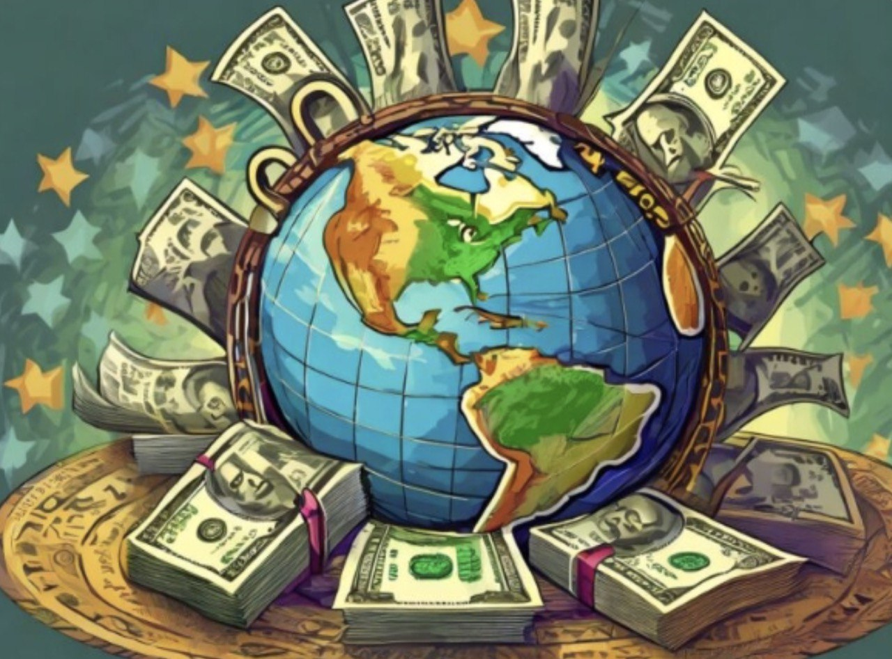
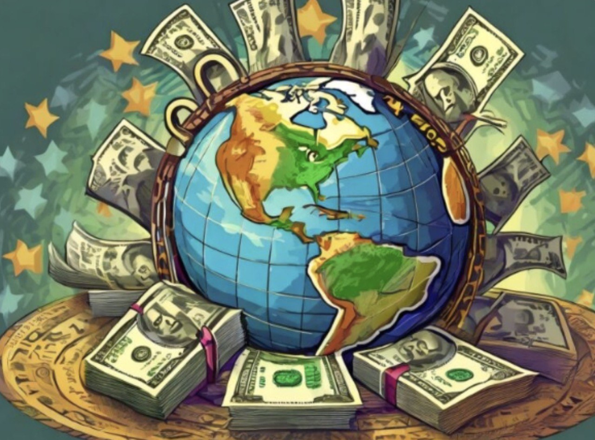

| Category | Chosen Decade (2000-2010) | Present Time (2024) | Future (2030) |
|---|---|---|---|
| Key Events/Highlights | |||
| Affect, Senses, & Feelings |  |
 |
 |
| Space |  |
||
| Globalization |  |
Journey through a decade of Philippine history with images capturing transformation and hope for tomorrow.
| Category | Chosen Decade (2000-2010) | Present Time (2024) | Future (2030) |
|---|---|---|---|
| Key Events/Highlights | |||
| Affect, Senses, & Feelings | |
|
|
| Space | |
||
| Globalization |  |
Price: BTC
Bidders:
Artist: